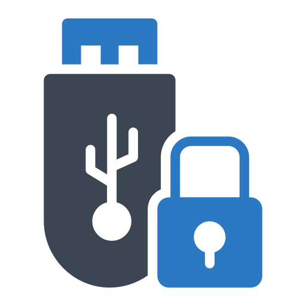
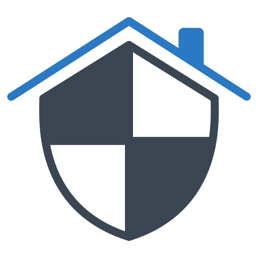
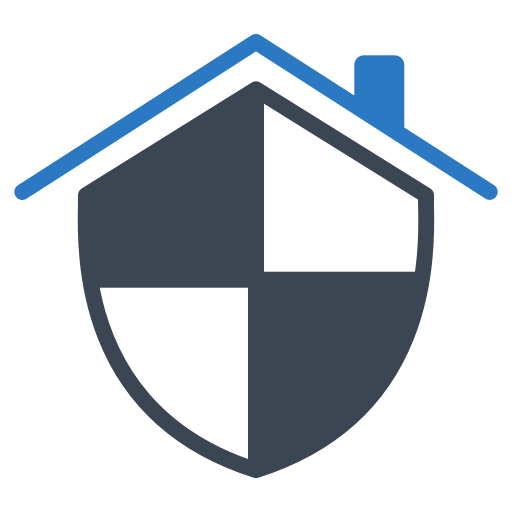

tema1-1d

Norma 1
El acceso a las computadoras y cualquier dispositivo que pueda
enseñar
algo acerca de la
forma en que funciona el mundo, debe ser ilimitado y total.
Levy cuenta con las habilidades de los hackers para aprender y
construir sobre las ideas y
los sistemas preexistentes.
 Norma 2
Toda la información debe ser libre.
La información debe ser libre para los hackers para que ellos puedan
arreglar, mejorar y
reinventar los sistemas.
Norma 3
La desconfianza en la autoridad, promover la descentralización.
La mejor manera de promover el libre intercambio de información es
tener un sistema abierto
que no presenta límites entre un hacker y un pedazo de información o un elemento del equipo que necesite
en
su búsqueda de conocimiento.
Norma 2
Toda la información debe ser libre.
La información debe ser libre para los hackers para que ellos puedan
arreglar, mejorar y
reinventar los sistemas.
Norma 3
La desconfianza en la autoridad, promover la descentralización.
La mejor manera de promover el libre intercambio de información es
tener un sistema abierto
que no presenta límites entre un hacker y un pedazo de información o un elemento del equipo que necesite
en
su búsqueda de conocimiento.
 Norma 4
Los hackers deben ser juzgados por su capacidad, no por criterios
como
títulos, edad, raza,
sexo o posición.
Inherente a la ética hacker es un sistema meritocrático, donde la
superficialidad se tiene
en cuenta en la estimación de la habilidad. Steven Levy señala que criterios como la edad, el sexo, la
raza,
la posición y la calificación se consideran irrelevantes dentro de la comunidad hacker.
Norma 4
Los hackers deben ser juzgados por su capacidad, no por criterios
como
títulos, edad, raza,
sexo o posición.
Inherente a la ética hacker es un sistema meritocrático, donde la
superficialidad se tiene
en cuenta en la estimación de la habilidad. Steven Levy señala que criterios como la edad, el sexo, la
raza,
la posición y la calificación se consideran irrelevantes dentro de la comunidad hacker.
 Norma 5
Puedes crear arte y belleza en un ordenador.
Los hackers aprecian profundamente técnicas innovadoras que permiten
a
los programas
realizar tareas complicadas con pocas instrucciones. el código de un programa es considerado para celebrar
una belleza propia, después de haber sido cuidadosamente compuesto y artísticamente arreglado.

Norma 6
Las computadoras pueden cambiar su vida para mejor.
Los hackers sintieron que las computadoras habían enriquecido sus
vidas, e hicieron su vida
aventurera. Los hackers consideran a los ordenadores como lámparas de Aladino que podían controlar.
https://es.wikipedia.org/wiki/%C3%89tica_hacker#%C3%89tica_Hacker
Norma 5
Puedes crear arte y belleza en un ordenador.
Los hackers aprecian profundamente técnicas innovadoras que permiten
a
los programas
realizar tareas complicadas con pocas instrucciones. el código de un programa es considerado para celebrar
una belleza propia, después de haber sido cuidadosamente compuesto y artísticamente arreglado.

Norma 6
Las computadoras pueden cambiar su vida para mejor.
Los hackers sintieron que las computadoras habían enriquecido sus
vidas, e hicieron su vida
aventurera. Los hackers consideran a los ordenadores como lámparas de Aladino que podían controlar.
https://es.wikipedia.org/wiki/%C3%89tica_hacker#%C3%89tica_Hacker